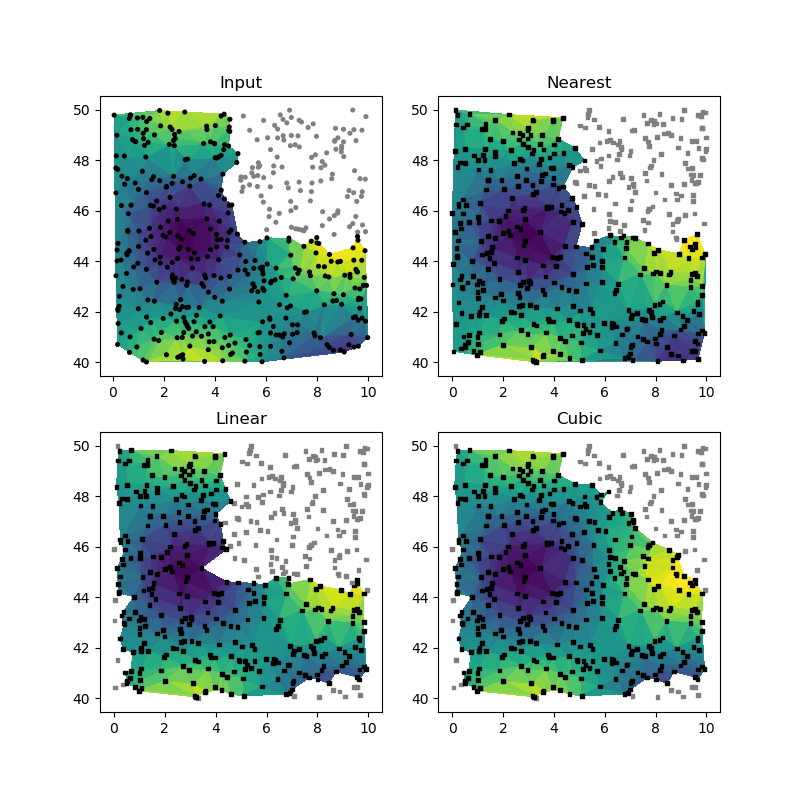

3.5.6.38. test_regrid_xy2xy.py – Test :func:`~vacumm.misc.grid.regridding.xy2xy¶

"""Test :func:`~vacumm.misc.grid.regridding.xy2xy"""
from vcmq import (xy2xy, code_file_name, N, P, get_tri_mask, get_tri)
# Generate data
def get_values(xx, yy):
return (N.sin(xx*N.pi/6)*N.sin(yy*N.pi/6))*100.
N.random.seed(0)
xmin, xmax = 0., 10.
ymin, ymax = 40., 50.
# - input
xi = N.random.uniform(xmin, xmax, 500)
yi = N.random.uniform(ymin, ymax, 500)
zi = N.ma.masked_array(get_values(xi, yi))
mask = (xi>(xmin+xmax)*.5)&(yi>(ymin+ymax)*.5)
zi[mask] = 1e20
zi[mask] = N.ma.masked
# - output
xo = N.random.uniform(xmin, xmax, 500)
yo = N.random.uniform(ymin, ymax, 500)
zot = N.ma.masked_array(get_values(xo, yo))
mask = (xo>(xmin+xmax)*.5)&(yo>(ymin+ymax)*.5)
zot[mask] = 1e20
zot[mask] = N.ma.masked
# Call and plot
kw = dict(vmin=zi.min(), vmax=zi.max())
P.figure(figsize=(8, 8))
P.subplot(221)
trii = get_tri((xi, yi), ttype='mpl', mask=zi)
P.tripcolor(trii, zi, **kw)
cc = N.zeros(len(xi), '|S3')
cc[:] = 'k'
cc[zi.mask] = '.5'
P.scatter(xi, yi, c=cc, s=7, marker='o')
P.title('Input')
for i, method in enumerate(['nearest', 'linear', 'cubic']):
# Interp
zo = xy2xy(xi, yi, zi, xo, yo, method=method)#[0]
# Triangles
trio = get_tri((xo, yo), ttype='mpl', mask=zo)
# Plot
P.subplot(2, 2, i+2)
P.tripcolor(trio, zo, **kw)
cc = N.zeros(len(xo), '|S3')
cc[:] = 'k'
cc[zo.mask] = '.5'
P.scatter(xo, yo, c=cc, s=7, marker="s")
P.title(method.title())
P.savefig(code_file_name(ext='png'))